小学校教員向け
授業プリント、スライド、校内研修資料、保護者向け文書に効きます。授業では「子どもがどこを見て、何を考え、どこに書くか」を先に設計します。
| 場面 | ワイヤーフレームで決めること | 効果 |
|---|---|---|
| 授業スライド | 問い、資料、考える視点、共有の順番 | 説明が長くならず、子どもの視線が迷いにくい |
| ワークシート | 資料欄、作業欄、支援ヒント、振り返り欄 | 学力差があっても取り組み始めやすい |
| 校内研修 | 問題提起、実例、体験、明日やること | 聞いて終わりではなく、実践につながる |
Wireframe Practice Guide
図解、スライド、Web、アプリ、広告バナー、教材づくりの前に、情報の順番と見る人の動きを整えるための実務ガイドです。
最初に作るべきものは、きれいな完成図ではなく、判断しやすい設計図です。
ワイヤーフレームは、色や装飾の前に「何を、どこに、どの順番で置くか」を決める設計図です。Webやアプリだけでなく、スライド、図解、バナー、教材にも使えます。
誰に何を理解してもらい、どんな判断や行動につなげたいのかを1文で決めます。
重要な情報、補足、根拠、行動ボタンを並べ、見る人が迷わない流れにします。
完成してから直すより、箱と線の段階で違和感を見つける方が速く、負担も軽くなります。
いきなり四角を並べると迷います。次の5段階にすると、初心者でも作りやすくなります。
誰に、何を、どうしてほしいかを1文で書く。
載せたい情報を全部出し、必須と任意に分ける。
最初に見るもの、納得する材料、最後の行動を並べる。
ローファイで3案作る。最初から1案に絞らない。
目的、視線、導線、状態、抜け漏れをチェックする。
| 型 | 構成 | 向いている場面 |
|---|---|---|
| 直球訴求 | 主文 + 商品/サービス + CTA | 内容が明確で、短時間で判断してほしい広告 |
| 課題共感 | 困りごと + 解決策 + CTA | 教育、業務改善、相談サービス |
| 実績訴求 | 数字 + 根拠 + ベネフィット | 導入実績、販売数、参加者数が強いとき |
| 期限訴求 | 期限 + 特典 + 行動 | セール、イベント、募集締切 |
| 比較訴求 | Before / After + 変化 | 改善サービス、教材、AI活用例 |
| 文字組み訴求 | 強いコピー + 余白 + 小さな補足 | 世界観や言葉の強さで見せたいとき |
| 型 | 構成 | 使いどころ |
|---|---|---|
| 結論先出し | 結論 + 理由 + 次の行動 | 研修、提案、報告 |
| 3根拠 | 主張 + 根拠1/2/3 | 説得、説明、授業のまとめ |
| Before / After | 課題の状態 + 改善後 | 業務改善、教材改善、AI活用 |
| プロセス | Step 1 -> Step 2 -> Step 3 | 手順、授業展開、運用ルール |
| データ主役 | グラフ + 読み取り + 示唆 | 調査結果、実績、行政説明 |
| 問いかけ | 問い + 選択肢 + 考える視点 | 授業、研修ワーク、参加型説明 |
参考にしたBANNER LIBRARYのように、良い制作物は「カテゴリ」「テイスト」「形」「色」「媒体」で探せると強くなります。このガイドでは、さらに「目的」と「ワイヤーフレームの型」まで結びつけます。
同じワイヤーフレームでも、使う人によって効きどころが変わります。下のボタンで切り替えてください。
授業プリント、スライド、校内研修資料、保護者向け文書に効きます。授業では「子どもがどこを見て、何を考え、どこに書くか」を先に設計します。
| 場面 | ワイヤーフレームで決めること | 効果 |
|---|---|---|
| 授業スライド | 問い、資料、考える視点、共有の順番 | 説明が長くならず、子どもの視線が迷いにくい |
| ワークシート | 資料欄、作業欄、支援ヒント、振り返り欄 | 学力差があっても取り組み始めやすい |
| 校内研修 | 問題提起、実例、体験、明日やること | 聞いて終わりではなく、実践につながる |
住民向けページ、申請フォーム、案内チラシ、庁内説明資料に効きます。行政文書では「制度として正しい」だけでなく「住民が迷わず行動できる」構造が重要です。
| 場面 | ワイヤーフレームで決めること | 効果 |
|---|---|---|
| 申請ページ | 対象者、必要書類、期限、手順、問い合わせ | 電話問い合わせや差し戻しを減らせる |
| チラシ | 誰向け、何が変わる、いつまで、どこへ行く | 読む前に捨てられにくくなる |
| 庁内説明 | 背景、論点、選択肢、判断材料、依頼事項 | 合意形成が速くなる |
ワイヤーフレームは、見た目を弱める工程ではなく、デザイン判断の土台を固める工程です。色やフォントに入る前に、情報設計とインタラクションの筋を通します。
| 場面 | ワイヤーフレームで決めること | 効果 |
|---|---|---|
| LP | 訴求順、信頼材料、CTA、離脱ポイント | 見た目の前にコンバージョンの骨格を検証できる |
| アプリ | 主要操作、状態、エラー、空状態 | UIコンポーネントの抜け漏れを減らせる |
| ブランド展開 | 同じ構造で媒体違いに展開する方法 | 統一感と制作速度が上がる |
受託開発では、ワイヤーフレームが仕様のすり合わせになります。実装前に画面、状態、入力、エラー、レスポンシブを確認できると、手戻りが大きく減ります。
| 場面 | ワイヤーフレームで決めること | 効果 |
|---|---|---|
| 見積もり前 | ページ数、機能、フォーム、状態数 | 見積もりの根拠が明確になる |
| 実装前 | 画面遷移、APIが必要な箇所、エラー | 実装中の仕様確認が減る |
| 納品前 | 受け入れ条件、表示崩れ、操作フロー | 検収がスムーズになる |
自分の商品やサービスを説明するときは、言いたいことが増えがちです。ワイヤーフレームを作ると、見込み客が知りたい順番に並べ直せます。
| 場面 | ワイヤーフレームで決めること | 効果 |
|---|---|---|
| サービスページ | 誰向け、悩み、提供内容、料金、申込 | 自分語りではなく顧客目線になる |
| SNS告知 | 最初の一文、証拠、行動導線 | 投稿の反応が検証しやすい |
| 営業資料 | 課題、解決策、事例、次の相談 | 商談で話す順番が整う |
教材は「情報を載せる紙面」ではなく「学習者の思考を進める画面」です。ワイヤーフレームでは、問い、資料、作業、支援、振り返りの順番を設計します。
| 場面 | ワイヤーフレームで決めること | 効果 |
|---|---|---|
| プリント | 問い、資料、記入欄、ヒント、発展 | 子どもが一人でも取り組み始めやすい |
| 教材販売ページ | 対象学年、使う場面、中身、導入手順 | 購入前の不安を減らせる |
| テンプレート | 再利用する枠、差し替える枠、注意書き | シリーズ化しやすくなる |
白紙から考えず、目的に合う型を選びます。型は発想を縛るものではなく、迷いを減らすための足場です。
LP、バナー、告知に。最初の主張とCTAを強く出します。
一覧、機能紹介、教材一覧に。カード内の順番を揃えます。
手順、授業展開、登録フローに。粒度を揃えるのがコツです。
改善事例、業務改善、教材の価値説明に向いています。
申請、問い合わせ、アンケートに。エラー状態も必ず考えます。
管理画面、分析画面に。何を見て判断する画面かを先に決めます。
見た目の好き嫌いで議論が始まり、情報の順番や導線の問題が隠れます。
目的、視線、CTA、情報量に集中でき、修正も速くなります。
比較できないため、相手も「なんとなく違う」としか言えません。
結論先出し、課題共感、比較訴求など、考え方の違いを選べます。
データがない、失敗した、権限がない、読み込み中などで実装時に詰まります。
通常、空、エラー、成功、読み込み中を最低限考えておきます。
ワイヤーフレームと完成例を並べると、何を決めてから見た目に進むのかがわかります。ここでは広告バナー、スライド、プリント、LP、チラシ、図解の6種類を用意しました。
主文、補足、商品イメージ、CTAの優先順位を決めてから、色と素材感を入れる。
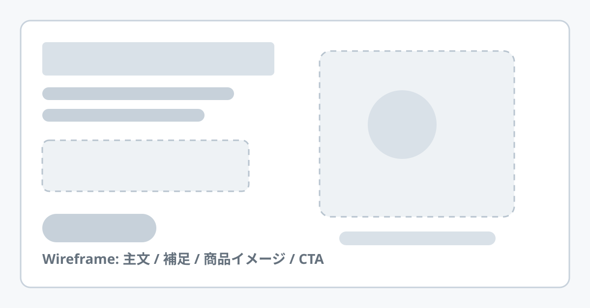
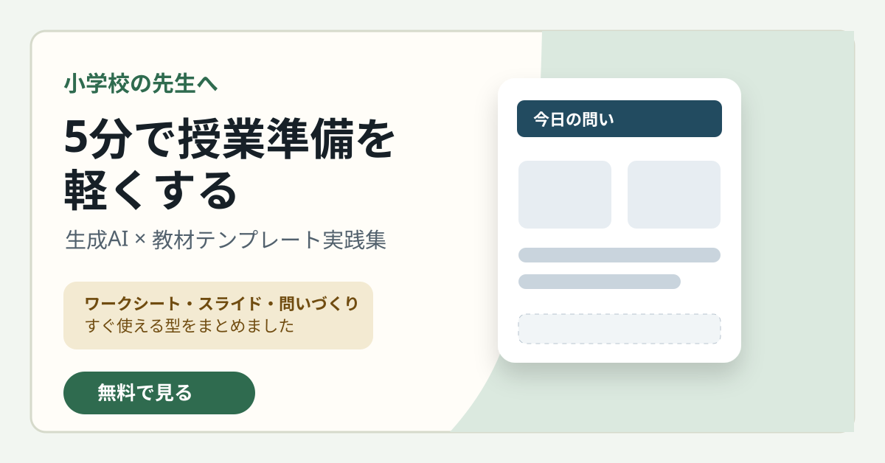
1枚1メッセージ。タイトル、結論、3つの根拠、締めの一文を分ける。
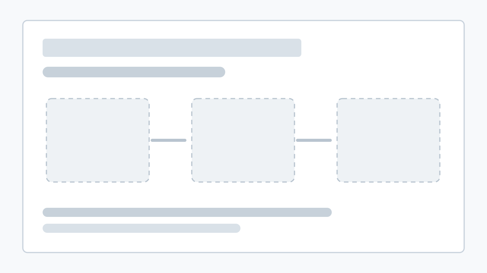
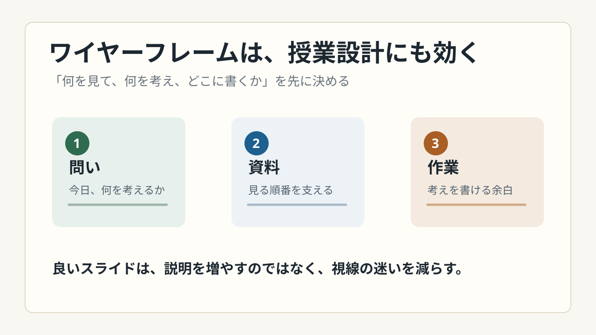
問い、資料、作業欄、振り返り欄を先に設計し、学習者の手が止まる場所を減らす。
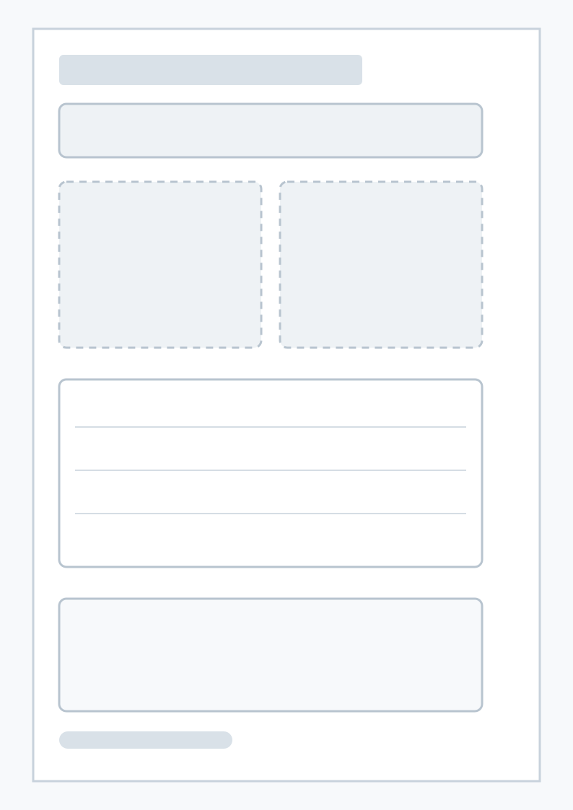
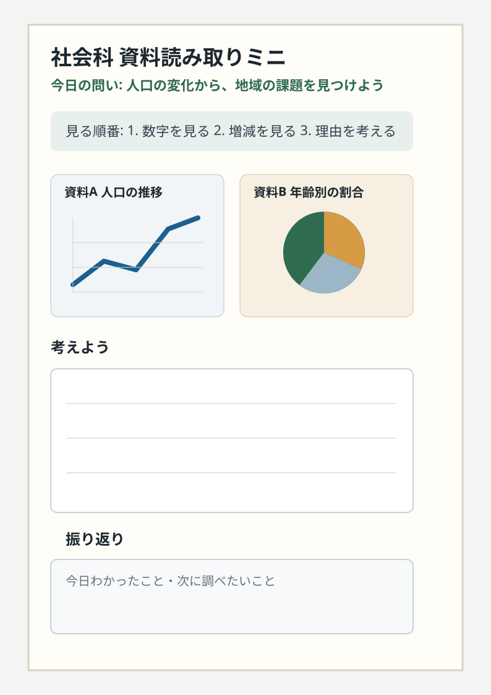
ファーストビュー、課題、解決策、特徴、CTAの流れを先に固定する。
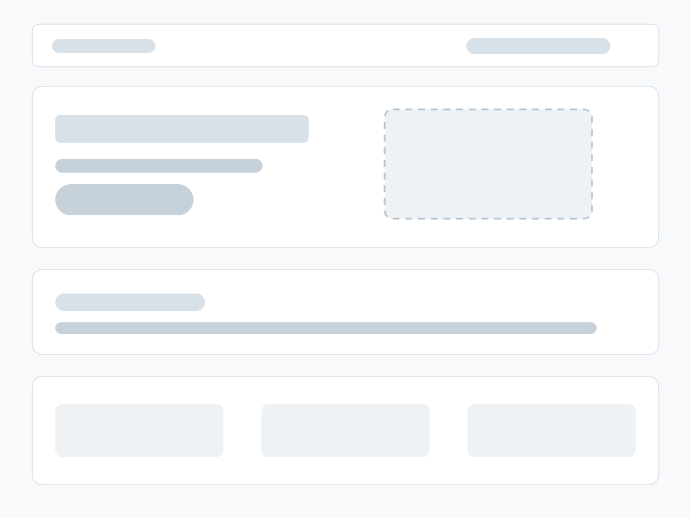
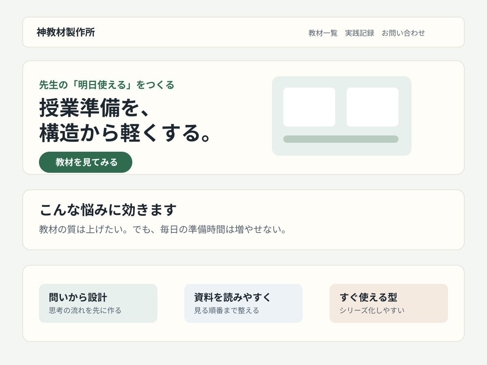
イベントや研修は、対象、日時、得られること、申込導線を大きく整理する。
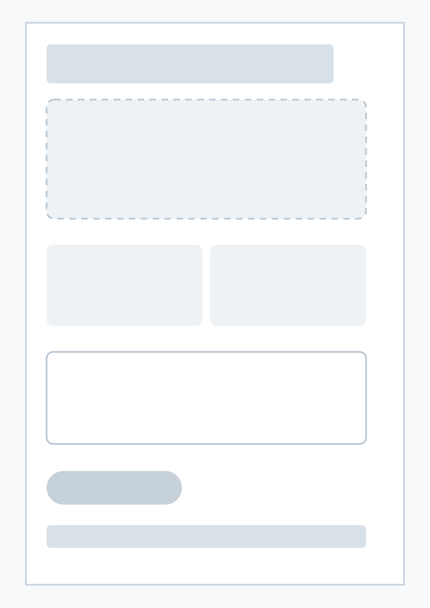
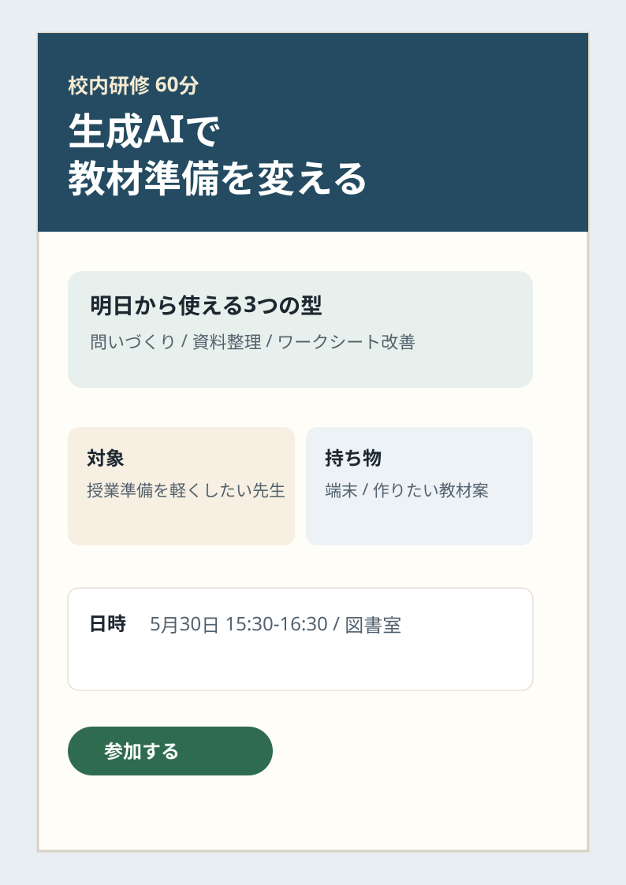
中心テーマと周辺要素の関係を決め、矢印や余白で意味の違いを出す。
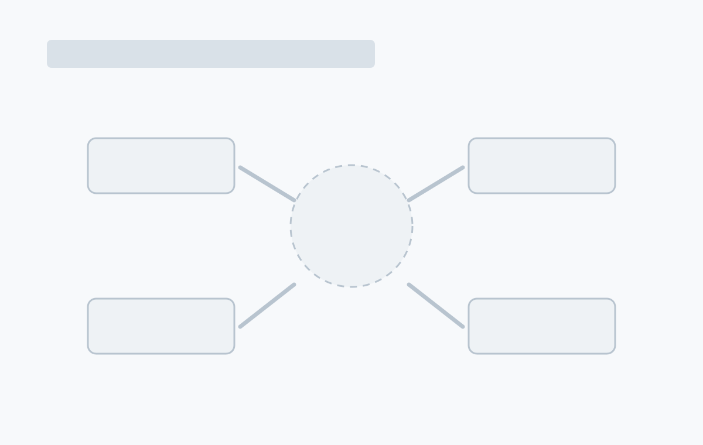
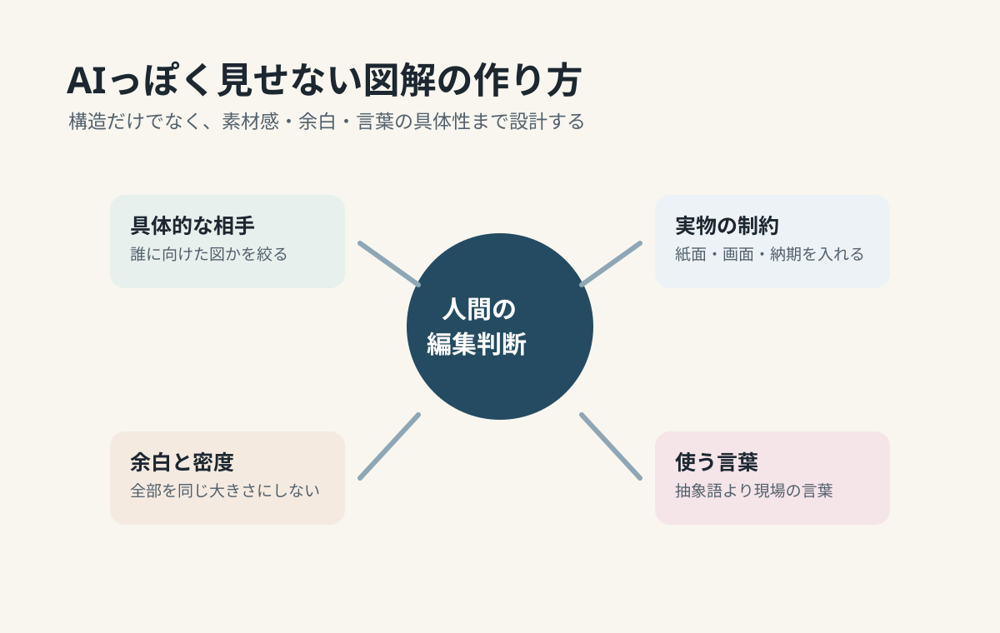
下の画像は、Image生成で作った「ワイヤーフレームから完成例へ」の参考ボードです。文字は正確に読ませず、構図、密度、余白、完成度の方向性を見るための素材として使います。
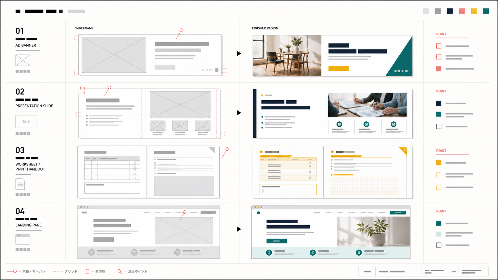
AIっぽさは、生成技術そのものよりも「誰に向けたものかが薄い」「言葉が抽象的」「余白と密度が全部同じ」「実物の制約がない」ことで出やすくなります。
ワイヤーフレームは、足す作業より削る作業が大切です。目的に関係しない情報は、別ページや補足に逃がします。
見出し、ボタン、教材の問いは、構造そのものに影響します。重要な言葉だけは早めに実文に近づけます。
Webや申請フォームはスマホ閲覧が多い前提で、上下に積んだときの順番を確認します。
「どうですか？」ではなく、「最初にどこを見ましたか」「次に何を押すと思いますか」と聞きます。
生成AIは強力ですが、全部を任せると「もっともらしいけれど、相手に合っていない構成」になりがちです。人間が判断するところと、AIに広げてもらうところを分けます。
| 工程 | 人間が手を動かすこと | 生成AIに任せやすいこと |
|---|---|---|
| 目的設定 | 誰に何をしてほしいかを決める | 目的文の言い換え、ターゲット別の観点出し |
| 情報整理 | 本当に必要な情報を選ぶ | 情報の分類、抜け漏れ候補の提案 |
| 構成案 | 最終的に採用する流れを決める | 3案の構成、型の提案、比較表作成 |
| コピー | 自分の実感、顧客の言葉、専門的正確性を入れる | 見出し案、CTA案、短文化、トーン調整 |
| レビュー | 現場感、倫理、実現可能性を判断する | チェックリスト照合、失敗パターンの指摘 |
| 実装・制作 | 最終確認、公開判断、関係者調整 | HTML下書き、CSS案、プロンプト化、表の整形 |
プロンプトは、そのままコピーして使えます。最初にワイヤーフレームを作り、次に完成ビジュアルへ進む順番がおすすめです。
あなたはUI/UXデザイナーです。
次の条件で、ローファイのワイヤーフレーム案を3つ作ってください。
媒体:
対象者:
目的:
最終的にしてほしい行動:
載せたい情報:
避けたいこと:
サイズ:
参考にしたい雰囲気:
出力:
1. 情報の優先順位
2. 3つの構成案
3. テキストだけでわかるラフワイヤー
4. それぞれの向き不向き
5. 次に確認すべき質問広告バナーを制作してください。
媒体:
サイズ:
ターゲット:
主文:
補足:
CTA:
商品・サービス:
使いたい素材:
避けたい表現:
条件:
- 1秒で主文が読める
- 主文、補足、CTAの優先順位を明確にする
- 余白、写真枠、質感、文字組みまで設計する
- AIっぽい抽象アイコンだけに頼らない
- 日本語テキストは正確に入れる。難しい場合は文字なし版を先に作る次の内容を16:9スライド1枚にしてください。
聞き手:
この1枚で伝えたい結論:
根拠:
入れたい図解:
口頭で補足する内容:
次のスライドへのつなぎ:
条件:
- 1枚1メッセージ
- タイトルは分類名ではなく主張にする
- 文字を詰め込まず、視線の入口を作る
- 図、数字、余白の役割を分ける
- まずワイヤーフレーム、その後完成案を出すA4教材プリントのワイヤーフレームと完成案を作ってください。
学年:
教科:
単元:
今日の問い:
使う資料:
子どもが書く内容:
支援が必要な子へのヒント:
発展課題:
条件:
- 問い、資料、作業欄、振り返り欄を明確に分ける
- 学習者の視線が上から下に自然に流れる
- 書く欄の広さを思考量に合わせる
- 先生の説明で補う部分と紙面で支える部分を分ける次のサービスのLPワイヤーフレームを作ってください。
サービス名:
ターゲット:
悩み:
提供価値:
証拠・実績:
CTA:
料金や導入条件:
FAQ候補:
構成:
ファーストビュー / 課題 / 解決策 / 特徴 / 使い方 / 実績 / FAQ / 最終CTA
条件:
- スマホ表示時の順番も提案する
- 途中離脱しそうな不安を先回りする
- 最後に完成ビジュアル用プロンプトも作る次のテーマを図解にしてください。
テーマ:
見る人:
伝えたい関係性:
要素:
中心に置くもの:
最後に残したい一文:
条件:
- フロー、マトリクス、中心放射の3案を出す
- 矢印の意味を統一する
- 抽象アイコンの羅列にしない
- 現場の言葉、具体例、余白の強弱を入れる
- 色がなくても関係がわかる構造にするこのガイドは、以下の資料を参考にしつつ、初心者がすぐ使えるように再構成しています。